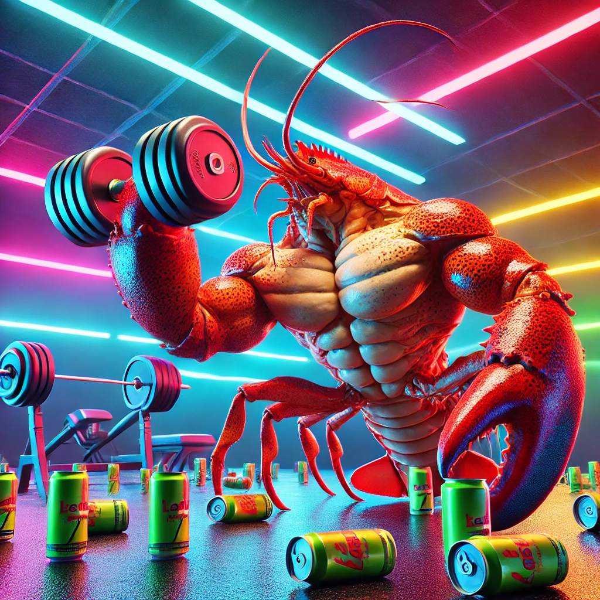
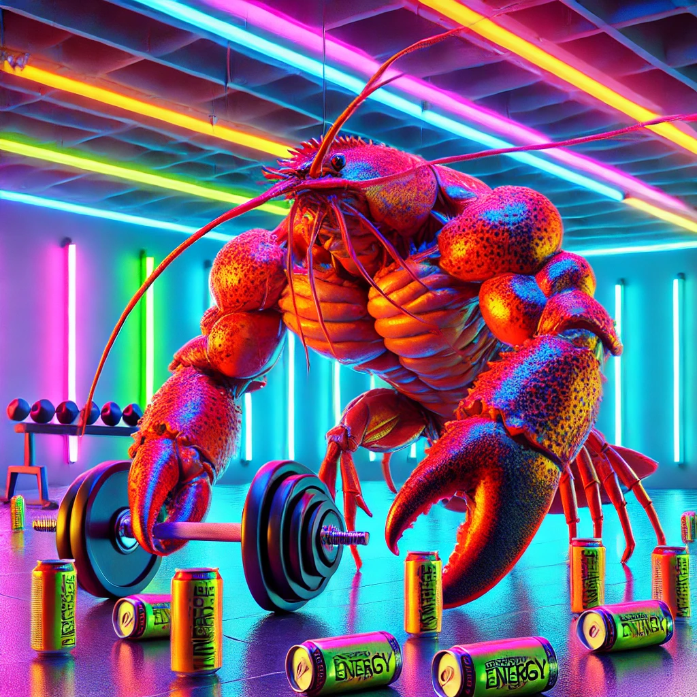

Harry Gleicher
English and Anthropology Major.
My mom is Australian and loves a good English brekky, so I grew up drinking tea every morning before school and have continued that ritual at Wesleyan.
Fav tea: Dong Ding Oolong.

Josh Phythian
Computer Science and Integrative Sciences Major.
I love cooking and eating food. While working at a cafe, I got tired of drinking espresso so I started trying teas that were sold at the cafe.
Fav tea: Hojicha